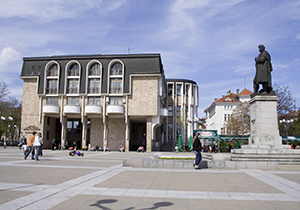

Камерна Опера - Благоевград
 През лятото на 1972 г. група студенти от Българска държавна консерватория създават Младежка опера към читалище „Пенчо Славейков” – София. Идеята е на основателя й Пламен Карталов – директор, главен художествен ръководител и режисьор /1972–1982 г./, в сътрудничеството с Трифон Силяновски – музикален ръководител и пианист – акомпанятор /1972–1983 г./ и певците Валерия Широканска, Николай Станчев, Росица Антонова, Здравко Гаджев, Райна Михова – Петрова, Магда Василева, Георги Сербезов, Бистра Константинова и Ботьо Янчев. Камерна Опера Благоевград е единственият в страната професионален музикално – сценичен институт, който работи в областта на малката оперна форма. Първият премиерен спектакъл е “Любов и хитрост” от Йозеф Хайдн, състоял се през м. септември 1972 г. Постановката е осъществена от Пламен Карталов – режисьор, Александър Коюмджиев – диригент и сценографите Възкресен Изворов и Венелин Върбанов. Под различни наименования: „Младежка опера”, „Младежка камерна опера”, „Творчески дом на музиканта” и „Младежка опера за всички” в периода от 1972 до 1977 г. са реализирани постановки на оперите „Отвличане от сарая” – В.А.Моцарт, „Поклонниците от Мека” – К.В.Глук, „Аптекарят” – Й.Хайдн и „Серафине” – Х.Сутермайстер с режисьор Пламен Карталов, диригентите Трифон Силяновски, Камен Големинов и художника Иван Савов.